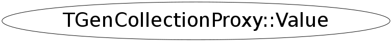

class TGenCollectionProxy::Value
TGenCollectionProxy Proxy around an arbitrary container, which implements basic functionality and iteration. In particular this is used to implement splitting and abstract element access of any container. Access to compiled code is necessary to implement the abstract iteration sequence and functionality like size(), clear(), resize(). resize() may be a void operation.
Function Members (Methods)
public:
| ~Value() | |
| void | DeleteItem(void* ptr) |
| Bool_t | IsValid() |
| TGenCollectionProxy::Value& | operator=(const TGenCollectionProxy::Value&) |
| TGenCollectionProxy::Value | Value(const TGenCollectionProxy::Value& inside) |
| TGenCollectionProxy::Value | Value(const string& info, Bool_t silent) |
Data Members
public:
| UInt_t | fCase | type of data of Value_type |
| void* | fCtor | Method cache for containee constructor |
| void* | fDelete | Method cache for containee delete |
| void* | fDtor | Method cache for containee destructor |
| EDataType | fKind | kind of ROOT-fundamental type |
| UInt_t | fProperties | Additional properties of the value type (kNeedDelete) |
| size_t | fSize | fSize of the contained object |
| TClassRef | fType | TClass reference of Value_type in collection |
Class Charts
{kind=link}
{kind=link}
{kind=link}
{kind=link}
